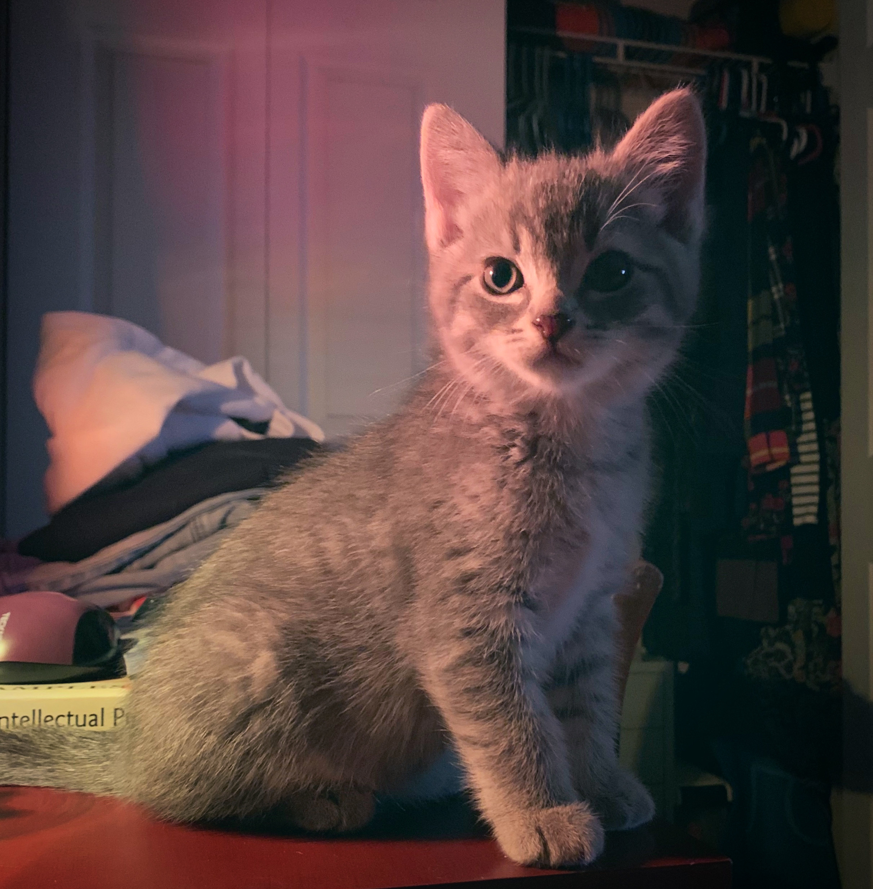
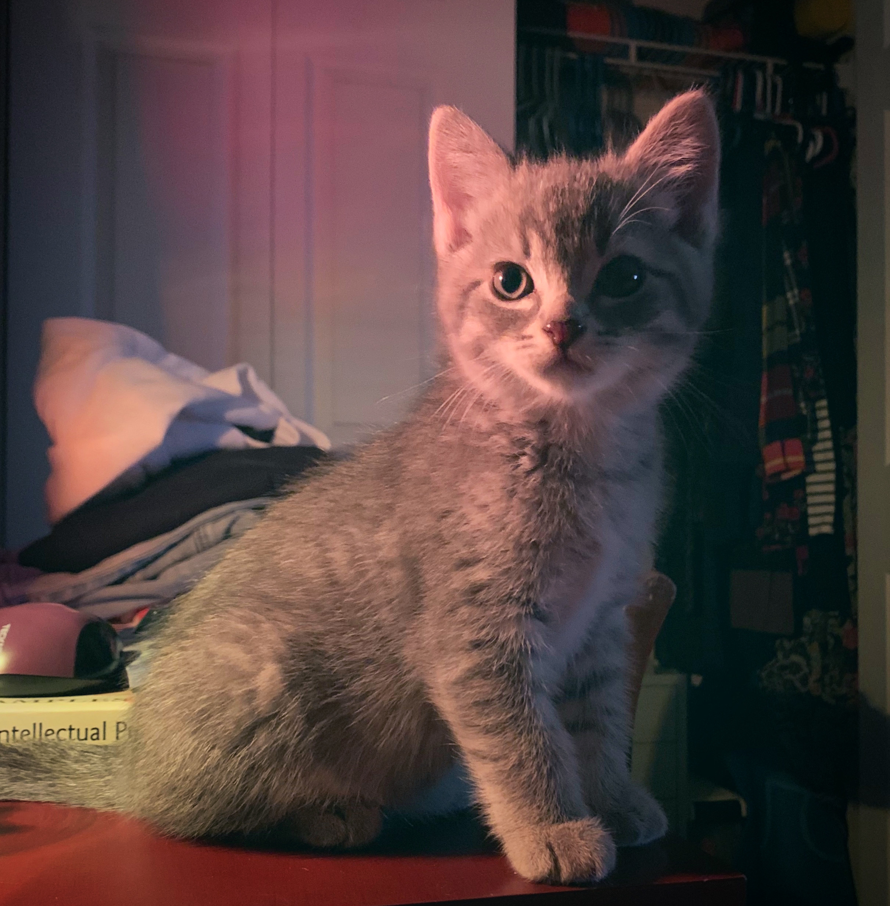

Lesson 1 Assignment
Click on the cat to view my first assignment in this program, where I learned how to utilize Git & GitHub.
I am making this portfolio as a continuing project for my Front-End Web Developer class with University of Washington. I will begin by listing my past projects as well as current projects for this course, to view a project I've built, please click the Cat icon!
Click on the cat to view my first assignment in this program, where I learned how to utilize Git & GitHub.
This is the first webiste I built. It is a hiking blog that highlights a trip that I went on in the late summer of 2018. Please note, the Instagram link on this page no longer works as I changed my IG handle and have yet to update this page with the current info.
The Sound is my fourth coded website, it is a more comprehensive display of important musical albums that have meant a lot to me over the years.
*no active link yet*This is a website I'd love to make and work on to write movie reviews!